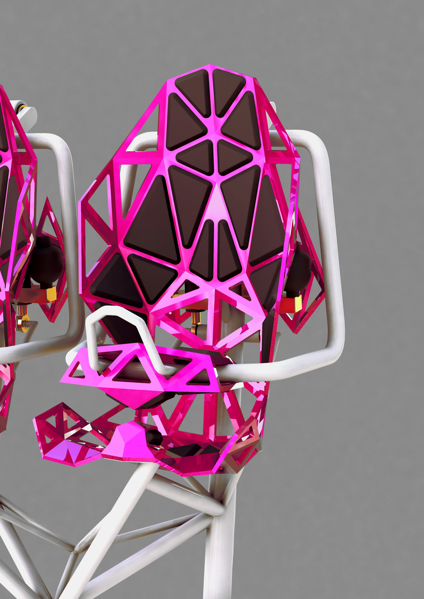
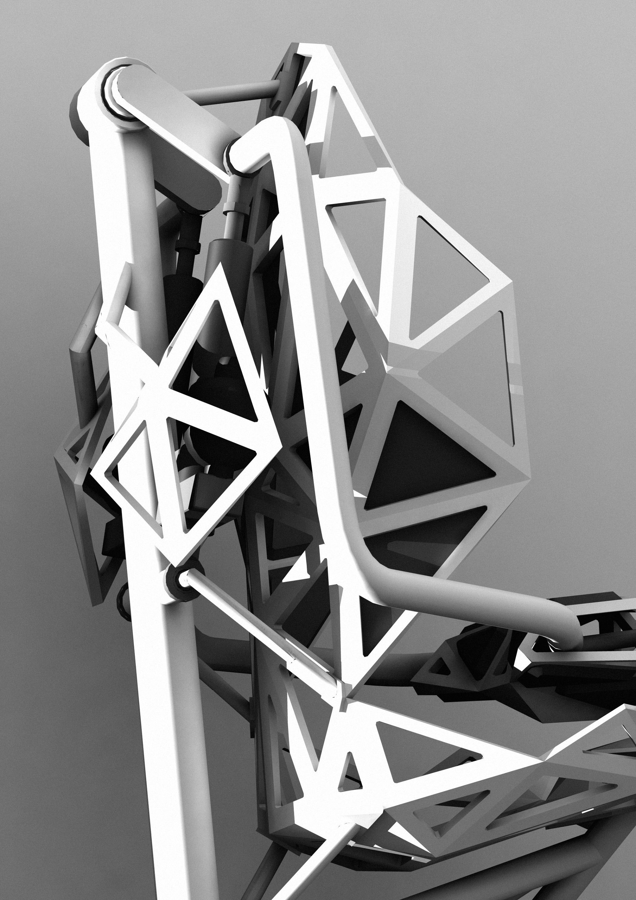
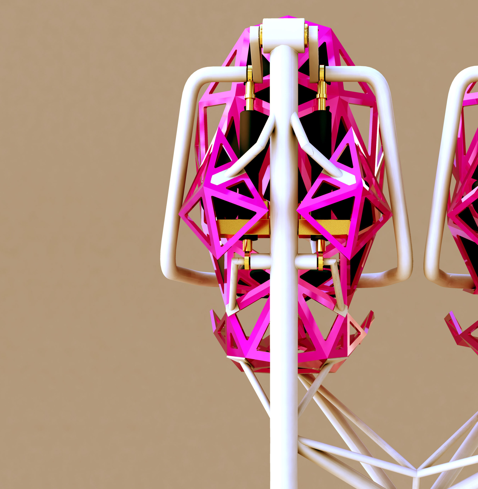
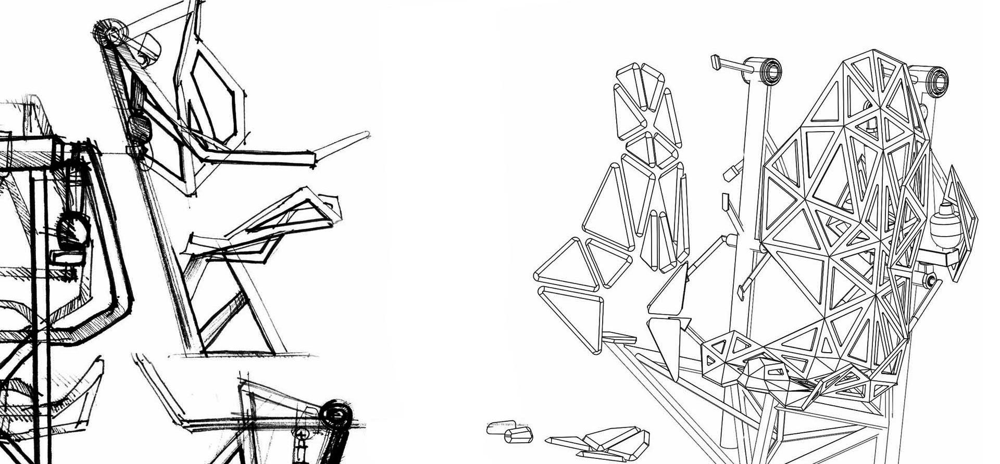
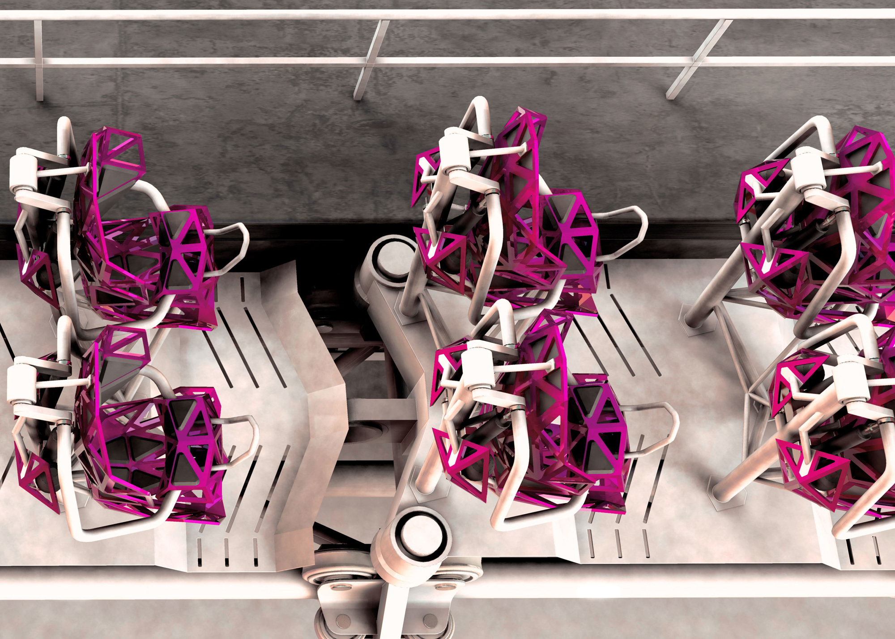
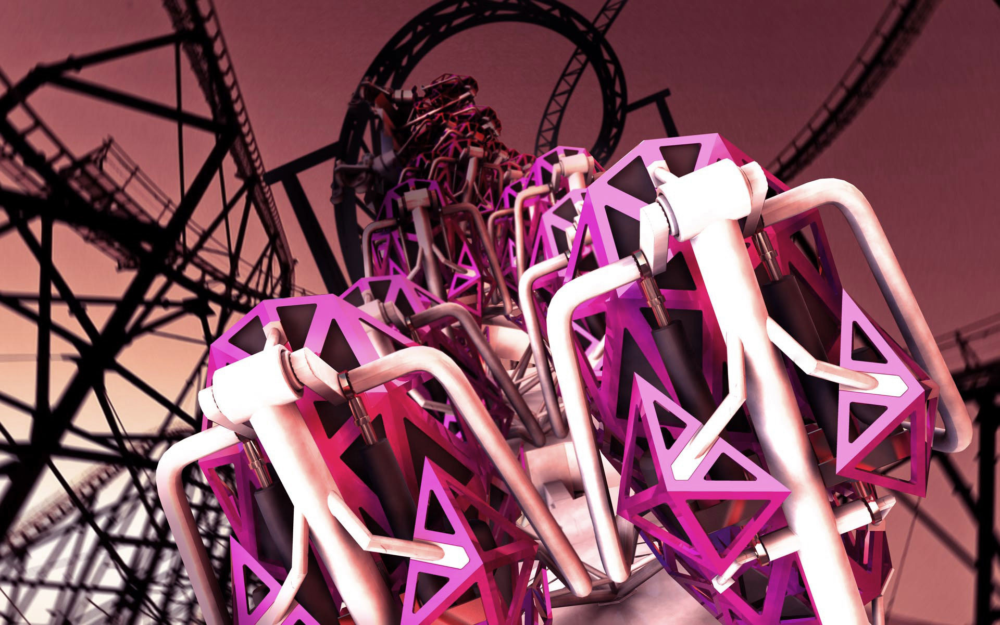

Rollercoaster






This project was done in cooperation with Mack Rides. The goal was to design a rollercaster based on an existing concept for a theme park. The main part was to design the seat. The design is limited by several ergonomic factors and safety regulations. Nevertheless it should be the eye catcher of the rollercoaster. My design is inspired by architecture and design elements that symbolize speed and lightweight like the Beijing Olympic Stadium and Konstantin Grcics Chair One. The cushion elements can easily be changed so you are flexible to adapt the seat for children or heavy people. The connecting surfaces are based on ergonomic research and tests done in teamwork by the students and the collaborating company Mack Rides.
Dieses Projekt entstand zusammen mit Mack Rides. Ziel war es eine Achterbahn auf einem bestehenden Vergnügungsparkkonzept zu gestalten. Im Mittelpunkt stand hier der Achterbahnsitz. Dieser soll trotz hoher ergonomischer und sicherheitrelevanter Einschränkungen als Blickfang der Achterbahn dienen. Inspiration sind Formen aus Architekur und Design, die Geschwindigkeit und Leichtbau vermitteln. Beispielsweise das Beijing Sports Stadium und der „Chair One“ von Konstantin Grcic. Die Polsterlemente können in der Wartung ausgestauscht werden um Sitze für Kinder und Schwergewichtige zu schaffen. Die Kontaktflächen basieren auf ergonomischen Versuchen, die wir als Team von Studenten und der Firma Mack Rides erarbeitet haben.